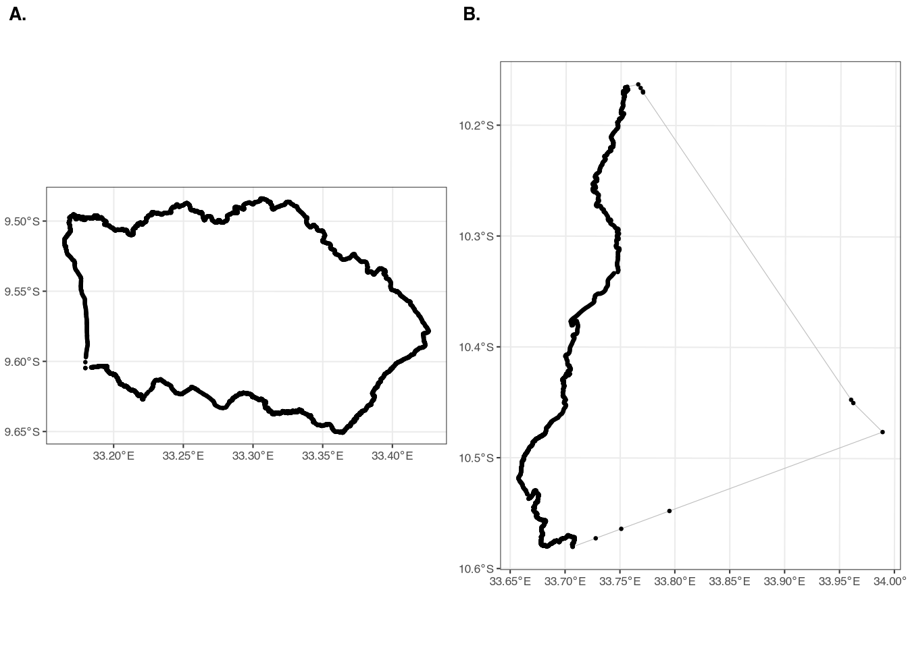
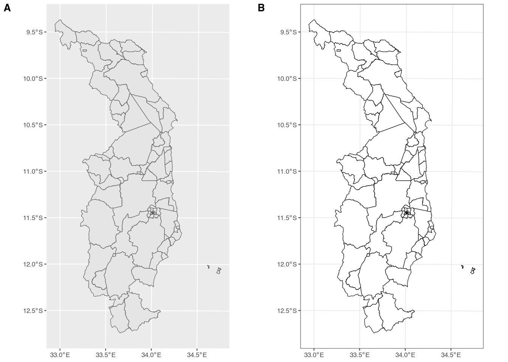

Vector files (shapefiles)
3 Vector files
Vector files are one of the most common formats for geospatial data and these are commonly referred to as “shapefiles” in the geospatial context.1 They are familiar to almost everyone, even users who have not used them directly; shapefiles make up many of the maps you see! Shapefiles are outlines of geographic areas or other features of interest – for example, a shapefile could be the outlines of buildings, although they are more commonly outlines of administrative areas. Shapefiles work by outlining these “polygons” with points. Consider a simple square; you can outline an entire square with just four points. A pentagon would require five points, a hexagon six points, and so on. Shapefiles are just a list of points – or vertices – that outline different features/polygons. It is not the geographic area of the feature per se that increases the size of a shapefile (in terms of computer memory); instead, it is the number of vertices needed to outline the shape. Some geographic boundaries are relatively smooth on the edges, which leads to fewer vertices, while others, such as coastlines, are complicated shapes requiring many more vertices. While shapefiles can include descriptive information about each feature – for example, some countries release shapefiles that include census-derived demographic information – it is the geographic nature of shapefiles that make them shapefiles.
Consider the two examples in Figure 1. Both shapes come from the traditional authority (TA) shapefile for Malawi; the TA is considered the third administrative division (admin3) of the country. Figure A (left panel) has an area of just 345.8 square kilometers, while Figure B (right panel) has an area of 777.9 square kilometers. Despite Figure B being more than twice the size, Figure A has 6,280 vertices while Figure B has 2,583 vertices. This is because Figure A is a relatively more complex shape, while Figure B is simpler. If we saved these two individual TAs as shapefiles, A would be much larger than B, despite having a smaller geographic area.
A key feature of shapefiles is that they often consist of many individual features. In the case of Figure 1, the two panels show two separate features from the same shapefile. In this case, the two features are called polygons, since they are enclosed features with multiple sides. However, shapefiles can also include points (e.g. the location of a household), lines (e.g. a road), or even multipolygons (e.g. multiple islands that make up the same TA). In this guide, we will mostly be working with polygons and points.
A final note is that “a shapefile” is a bit of a misnomer. We are referring to a file with the extension .shp, but shapefiles are actually a collection of files. The .shp file contains the geographic data, but it generally comes with other files that contain different bits of information. In general, you must have at least three files to be able to properly read a shapefile: the .shp file, the .shx file, and the .dbf file. A file that is not strictly necessary but is often included is the .prj file, which contains information about the projection of the shapefile. If you do not have the .prj file, you may need to specify the projection manually when reading the shapefile. If you would like to read more about these different files and the information they contain, there are many short explainers on the internet, including on the ESRI and QGIS websites.
3.1 Reading and plotting shapefiles
To read shapefiles in R, we will be using the package terra. In the data folder on the GitHub repository, there is a shapefile called mw3.shp. You will note that there are several other files with the same names, but different extensions. This shapefile contains the traditional authorities (TAs) of Northern Malawi. To read this shapefile, we can use the following code (making sure we first load the library using the library(terra) command at the top of the script, as discussed in Section 2.2):
class : SpatVector
geometry : polygons
dimensions : 76, 2 (geometries, attributes)
extent : 493675.9, 691460, 8591761, 8964834 (xmin, xmax, ymin, ymax)
source : mw3.shp
coord. ref. : Arc 1950 / UTM zone 36S
names : TA_CODE DIST_CODE
type : <chr> <chr>
values : 10120 101
10110 101
10102 101This code also loads the mw3 object on line 4, printing information about the shapefile in the console. Going down the rows, we see the following information:
class: SpatVector: This simply means that we loaded the shapefile usingterra.geometry: polygons: The shapefile includes only polygons; it does not have points or lines.dimensions: 76, 2 (geometries, attributes): The shapefile has 76 separate features and two attributes (or variables/columns). Towards the bottom of the output, we can see the names of the two attributes (TA_CODEandDIST_CODE), the type of variable (they are both characters, not numbers), and some example values.extent: 493675.9, 691460, 8591761, 8964834 (xmin, xmax, ymin, ymax): The extent of a shapefile refers to coordinates of a box that completely encloses the entire shapefile, sometimes referred to as a “bounding box.” Figure A1 in the appendix shows the bounding box, in UN blue, for the shapefilemw3.shp. We note that the coordinates in the extent do not look like what we normally think of as coordinates; in other words, they are not in latitude and longitude! Instead, they are in meters. We return to this below, in Section 3.2.source: mw3.shp: The name of the shapefile we loaded (as saved on our computer).coord. ref. : Arc 1950 / UTM zone 36S: This is the coordinate reference system (CRS). We will discuss this in more detail in Section 3.2.
To plot the shapefile, we will use ggplot2, from the tidyverse package,2 and the geom_spatvector() function, from the tidyterra package.
The above code produces two separate examples, with very small differences in the code for each. Figure A in Figure 2 shows the default theme, with no changes whatsoever. This results in a gray background, a gray “fill” in the features, and a black “outline” of the features. Figure B shows some small changes made for aesthetic reasons.3 We have changed the fill to white, meaning the interior colors of all the features will be white. In addition, we have used one of the themes built into ggplot2 – theme_bw() – which makes changes to the background of the plot.4

3.2 Coordinate reference systems
A core difficulty of showing maps on a two-dimensional surface is that the earth is a sphere.5 “Projecting” a three-dimensional object onto a two-dimensional surface is inherently challenging. The main difficult is that, in creating a two-dimensional representation, it is impossible to perfectly preserve both the shape and the area of a feature. This is why you sometimes see maps of the globe that look quite different.6
The most commonly used coordinate system, especially in everyday life, is longitude and latitude. However, this is not technically a projection, since it refers to the location of a point on the sphere of the earth itself. Projections are transformations that convert the three-dimensional shape of the earth onto a flat, two-dimensional plane. There are many different projections, but one of the most common is the Universal Transverse Mercator (UTM). This projection divides the earth into 60 separate “zones,” each of which covers six degrees of longitude. Without going into too much detail, one principle difference between UTM and GPS coordinates are that UTM coordinates are in meters, while GPS coordinates are in degrees. This is why the extent of the shapefile mw3.shp is in meters, not degrees. Returning to the output above, we can see that the CRS is “UTM zone 36S” – this is the zone that contains Malawi, the country shown in our shapefile.
In small countries such as Malawi, you will get very similar results whether you use UTM or longitude/latitude when calculating area and/or distances. However, we do observe some differences.
First, let’s convert the shapefile to longitude/latitude. To do this, we need the “EPSG” code for the CRS we want to convert to.7 The EPSG code for longitude/latitude is 4326. We can use the project() function from the terra package to convert the shapefile to longitude/latitude. We are then going to find the area and length of the perimeter using both the UTM projection and the longitude/latitude projection:8
mw3_latlon <- project(mw3, "EPSG:4326")
# find the area:
mw3_latlon$area <- expanse(mw3_latlon)
mw3$area <- expanse(mw3, transform = FALSE)
# find the length of the perimeter:
mw3_latlon$perimeter <- perim(mw3_latlon)
mw3$perimeter <- perim(mw3)
summary(mw3) TA_CODE DIST_CODE area perimeter
Length:76 Length:76 Min. :8.414e+05 Min. : 4314
Class :character Class :character 1st Qu.:2.148e+07 1st Qu.: 30625
Mode :character Mode :character Median :1.668e+08 Median : 75867
Mean :3.570e+08 Mean : 91986
3rd Qu.:4.870e+08 3rd Qu.:130190
Max. :1.969e+09 Max. :324527 TA_CODE DIST_CODE area perimeter
Length:76 Length:76 Min. :8.418e+05 Min. : 4315
Class :character Class :character 1st Qu.:2.149e+07 1st Qu.: 30632
Mode :character Mode :character Median :1.669e+08 Median : 75884
Mean :3.572e+08 Mean : 92015
3rd Qu.:4.873e+08 3rd Qu.:130228
Max. :1.970e+09 Max. :324624 How large are the differences? For area, the largest absolute difference is 0.09 percent. For the perimeter, the largest absolute difference is 0.13 percent. While they are small in Malawi, the differences can be quite large when calculating them for larger areas of the earth. The terra package explicitly suggests using longitude/latitude for these calculations; in fact, that is why we have to specify transform = FALSE in the expanse() function above. By default, terra will transform any shapefile into longitude/latitude in order to calculate area.9
More importantly, however, is to make sure any spatial objects you are using are in the same CRS. While some functions will automatically convert it for you, other will not. For the latter, sometimes it will raise an error (e.g. “They are not in the same CRS. Please project.”), while other times it will run but not return the results you are expecting. This is why it is important to always check the CRS of your spatial objects and, as a matter of habit, make sure to transform all spatial objects into the same CRS before performing any spatial analysis.
For our present purposes, longitude/latitude is fine. We have already seen how to explicitly change the projection using an EPSG code. However, we can also do it using another object. We now have two separate mw3 objects: mw3 and mw3_latlon. Let’s project the mw3 object into the same CRS as the mw3_latlon object (which is in longitude/latitude):
class : SpatVector
geometry : polygons
dimensions : 76, 4 (geometries, attributes)
extent : 32.94264, 34.7591, -12.74079, -9.36724 (xmin, xmax, ymin, ymax)
coord. ref. : lon/lat WGS 84 (EPSG:4326)
names : TA_CODE DIST_CODE area perimeter
type : <chr> <chr> <num> <num>
values : 10120 101 8.504e+06 1.243e+04
10110 101 7.775e+08 1.468e+05
10102 101 3.455e+08 1.022e+05As you can see, the coord. ref for mw3 is now lon/lat WGS 84 (EPSG:4326), which indicates that it is now in longitude/latitude. In addition, you will notice that the extent has changed; it is now in GPS coordinates, instead of meters.
3.3 Where can we find shapefiles?
So where can we find shapefiles? Unfortunately, there is no single answer. In many countries, the National Geospatial Information Agency (NGIA) or geospatial or geographic units in another data-related agency may create and disseminate official shapefiles. For example, you can find shapefiles for Korea (down to the admin4) on the Korean National Geographic Institute’s website. However, in some countries, these shapefiles are not released publicly.
Another reliable source is the Humanitarian Data Exchange,10 operated by the United Nations Office for the Coordination of Humanitarian Affairs (OCHA). Where necessary, shapefiles can also be found through a simple internet search. However, care should be taken in assessing the source and provenance of such files, particularly when itending to use them for official purposes.
Footnotes
Vector files do not exist only in a geospatial context. For example, .svg and .pdf files are both vector files.↩︎
When you load the library
tidyverse, it automatically loads several other packages, includingggplot2. This means you do not need to loadggplot2separately.↩︎This is completely optional and a matter of personal preference.↩︎
The earth is really an oblate spheroid (since it bulges at the equator), but thinking of it as a sphere is sufficient for our purposes.↩︎
The QGIS website has several excellent examples of this in section 8.4.↩︎
EPSG stands for the European Petroleum Survey Group. That name is now defunct but the acronym continues to be used.↩︎
By default, the
expanseandperimfunctions will return values in square meters, not kilometers.↩︎In addition, the
perimfunction’s help-file (?terra::perim) explicitly says, “When the coordinate reference system is not longitude/latitude, you may get more accurate results by first transforming the data to longitude/latitude withproject.”↩︎